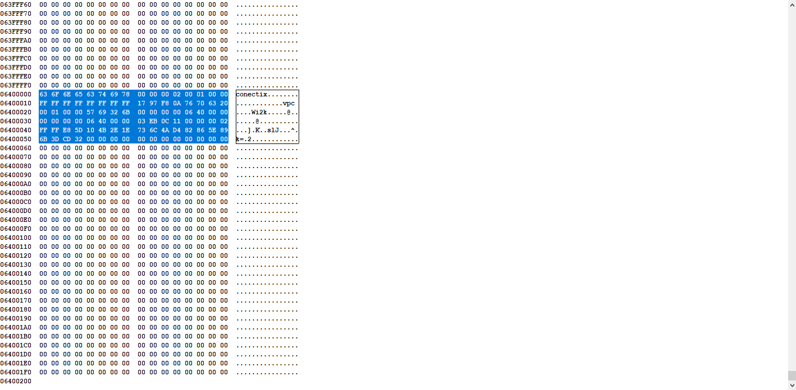

Assembly: x86实模式
- TAGS: Assembly
实模式
主要内容
- 虚拟机的安装和使用
- 汇编语言程序的调试
- 在屏幕上显示文本
- 在屏幕上显示数字
- 循环批量传送和条件转移
- 计算机中的负数
- 从 1 加到 100 并显示结果
- INTEL 8086 处理器的寻址方式
- 硬盘和显卡的访问与控制
虚拟机的安装和使用
主要内容
- 安装VirtualBox虚拟机管理器
- 创建VirtualBox虚拟机
- 虚拟硬盘简介
- 在Windows下创建虚拟硬盘并安装操作系统
- 在Linux下创建虚拟硬盘并安装操作系统
安装VirtualBox虚拟机管理器
虚拟机软件：
- VMWare
- Windows Virtual PC
- VirtuaBox
- Bochs
- … …
官网：https://www.virtualbox.org/
windows安装virtualbox，可自定义安装目录，其他默认。
Ubuntu安装virtuabox，系统界面找到Ubuntu软件搜索virtuabox并安装
创建VirtualBox虚拟机
打开VirtuaBox，点击新建
新建一台没有虚拟硬盘的虚拟机
- 虚拟电脑名称和系统类型
- 名称：任意，learn
- 文件夹：默认或自定义，如D:\VirtuaBox VMs
- 虚拟光盘：无
- 类型：按需求。Linux
- Subtype: 按需求。Ubuntu
- 版本：按需求。Ubuntu(64-bit)
- 自动安装，无
- 硬件
- 内存：自定义，2G
- 处理器：自定义，2核心，尽量不超过宿主机核心
- 宿主机核心，我的电脑右键–>属性–>设备管理器–>处理器
- 虚拟硬盘
- 勾选，不添加虚拟硬盘
虚拟机设置
- 系统-主板：
- 启动顺序：去掉软驱
- 显示-屏幕
- 显存大小：32M
- 存储
- IDE光盘控制器，SATA机械硬盘控制器，稍后添加
虚拟硬盘简介
认识虚拟硬盘并介绍VHD格式的虚拟硬盘
和真实的计算机一样虚拟机也需要一块硬盘，但这个硬盘并不是真实的硬盘，而是用文件模拟的硬盘(虚拟硬盘)。
不同公司开发的虚拟机软件对于虚拟硬盘格式的标准各不相同
- VMDK(VMWare虚拟机)
- VDI(VirtuaBox虚拟机)
- VHD(Virtual-PC/Hyper-V虚拟机)
- … …
VHD格式虚拟机硬盘
VHD相对简单
- Virtual Hard Disk Image Format Specification
- 文件前面数据区0面0柱1扇区、0面0柱2扇区等，最后512字节结尾，以conectix开头表示这是一个合法的VHD文件，包含创建时间大小等信息。

创建 VHD(了解，不操作)
- 打开磁盘管理。 在任务栏的搜索框中，输入“计算机管理”，然后选择“存储”>“磁盘管理”。
- 在“操作”菜单上，选择“创建 VHD”
在Windows下创建虚拟硬盘并安装操作系统
创建虚拟硬盘
- 管理–>工具–>虚拟介质管理–>创建
- 虚拟硬盘文件类型：VHD
- 虚拟硬盘文件位置：自定义，D:\VirtuaBox VMs\unbutu.vhd
- 虚拟硬盘文件大小：自定义，10G
虚拟机关联虚拟硬盘
- 选择已经创建的虚拟硬盘。虚拟机设置–>存储–>SATA控制器
光盘安装操作系统
- 选择已经下载的ISO文件。虚拟机设置–>存储–>IDE控制器
- 启动虚拟机
- 安装操作系统
- 安装过程略
操作系统IOS
- Ubuntu https://ubuntu.com/
在Linux下创建虚拟硬盘并安装操作系统
同上，虚拟硬盘创建过程直接在virtuabox的对应虚拟机设置中操作，过程略
汇编语言程序的调试
主要内容
- 带调试功能的虚拟机
- 安装Bochs虚拟机
- 为Bochs虚拟机安装虚拟硬盘
- 创建主引导扇区程序
- 将程序写入硬盘主引导扇区
- 用调试器观察程序的执行
在屏幕上显示文本
主要内容
- 显卡和显存
- 准备访问文本模式下的显存
- 字符的编码和显示属性
- 文本模式下的显存操作
- MOV指令的形式和机器码
- 列表文件的创建和使用
- 在汇编程序中使用标号
- 段间直接绝对跳转指令
- 在Bochs中运行和调试写屏程序
- 在VirtualBox中运行写屏程序
- 主引导扇区执行时的内存布局
- 使用标号计算跳转的偏移地址
- 使用寄存器的绝对间接近跳转
- 使用相对偏移量的短跳转和近跳转
在屏幕上显示数字
主要内容
- 显示数字的基本原理
- 无符号数除法指令div
- 在调试器里验证除法操作
- 异或指令xor的用法
- 加法指令add的用法
- 使用标号访问内存数据
- 段超越前缀的使用
- 显示标号的汇编地址
阶段性重点内容总结
循环批量传送和条件转移
主要内容
- 跳过非指令的数据区
- 逻辑段地址的重新设定
- 串传送指令和标志寄存器
- NASM的$和$$记号
- 使用循环指令LOOP分解数位
- 基址寻址和INC指令
- 数字的显示和DEC指令
- 基址变址寻址和条件转移指令
计算机中的负数
主要内容
- 无符号数和有符号数
- 减法指令SUB和求补指令NEG
- 计算机如何区分对待无符号数和有符号数
- 有符号数除法指令IDIV
- 有符号数的符号扩展指令
阶段性知识总结和拓展
主要内容
- 8086的标志寄存器
- 条件转移指令和CMP指令
从 1 加到 100 并显示结果
主要内容
- 字符串的定义和累加过程
- 栈的原理和使用
- 栈在数位分解和显示中的应用
- 在调试器里观察栈操作的状态
- 进一步认识栈和栈操作的特点
- 逻辑或指令OR和逻辑与指令AND
INTEL 8086 处理器的寻址方式
主要内容
- 寄存器、立即数和直接寻址
- 基址寻址
- 变址寻址
- 基址变址寻址
- 练习
硬盘和显卡的访问与控制
主要内容
- 离开主引导扇区
- 给汇编语言程序分段
- 控制段内元素的汇编地址
- 加载器和用户程序头部段
- 加载器的工作流程和常数声明
- 确定用户程序的加载位置
- 外围设备及其接口
- 输入输出端口的访问
- 通过硬盘控制器端口读扇区数据
- 过程和过程调用
- 过程调用和返回的原理
- 加载整个用户程序
- 用户程序的重定位
- 比特位的移动指令
- 转到用户程序内部执行
- 8086的无条件转移指令
- 用户程序的执行过程
- 验证加载器加载和执行用户程序的过程
- 用户程序概述
- 与文本显示有关的回车、换行与光标控制
- 回车的光标处理和乘法指令MUL
- 换行和普通字符的处理过程与滚屏操作
- 8086的过程调用方式
- 通过RETF指令转到另一个代码段内执行
- 在程序中访问不同的数据段
- 使用新版FixVhdWr写虚拟硬盘并运行程序
- 练习